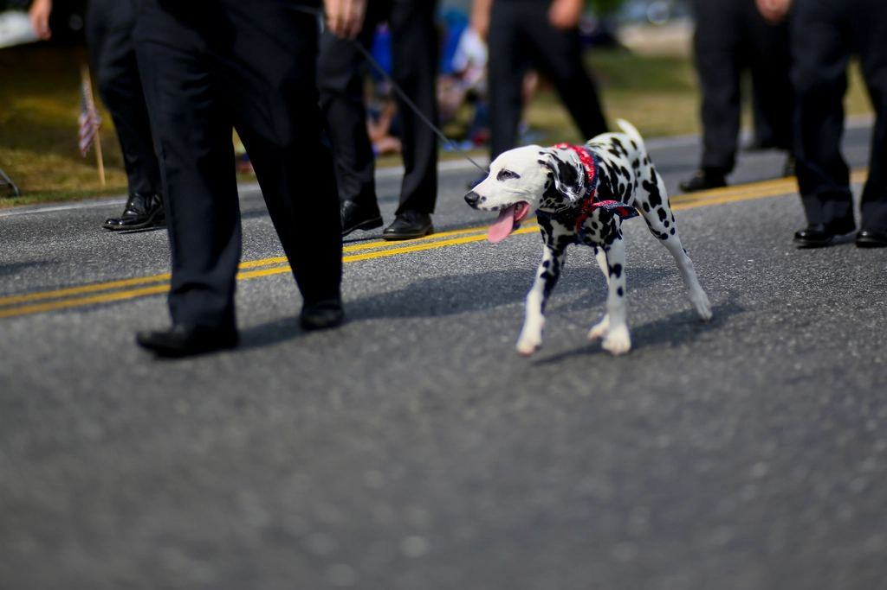
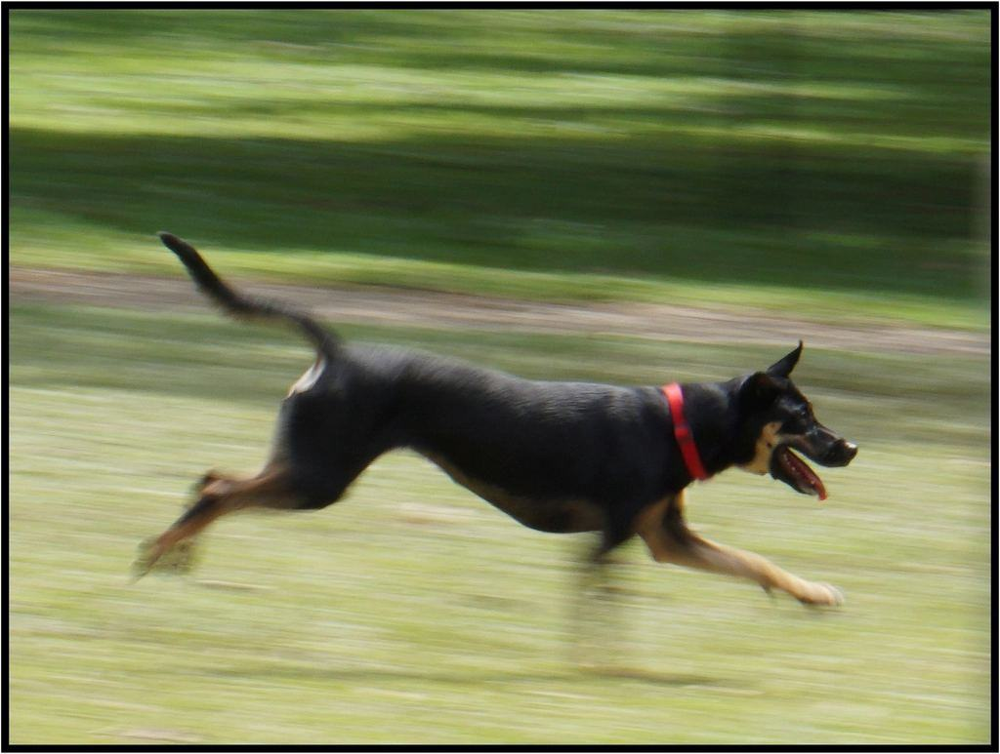
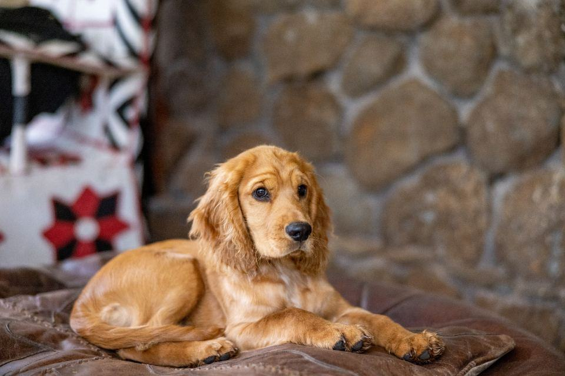
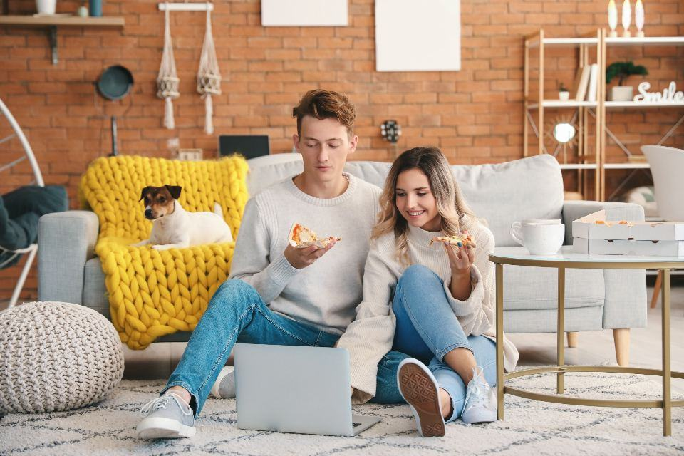
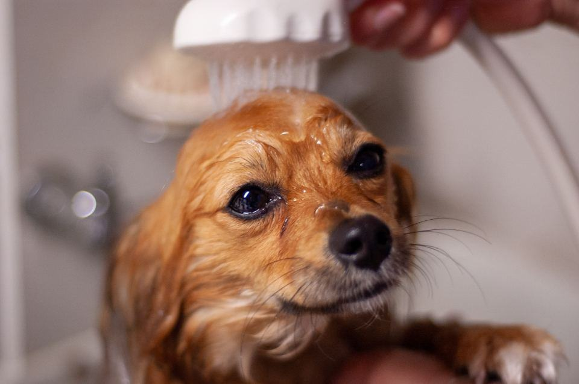
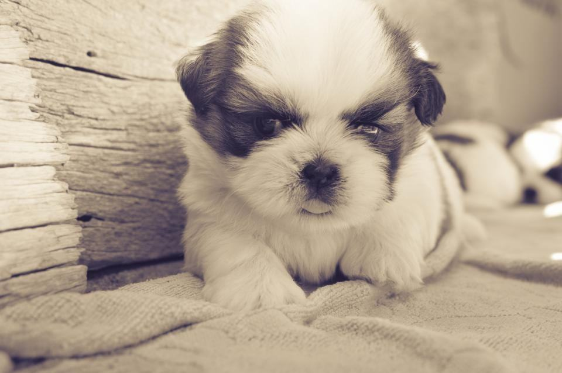
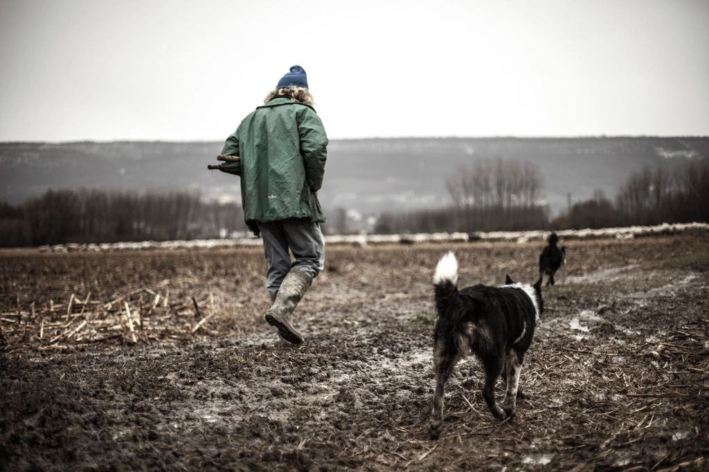
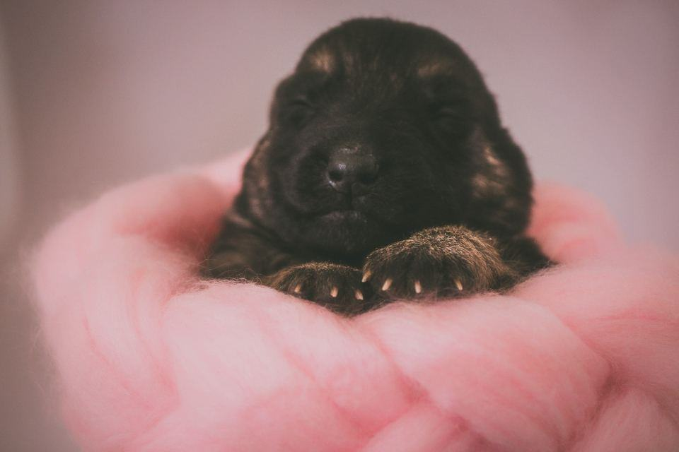
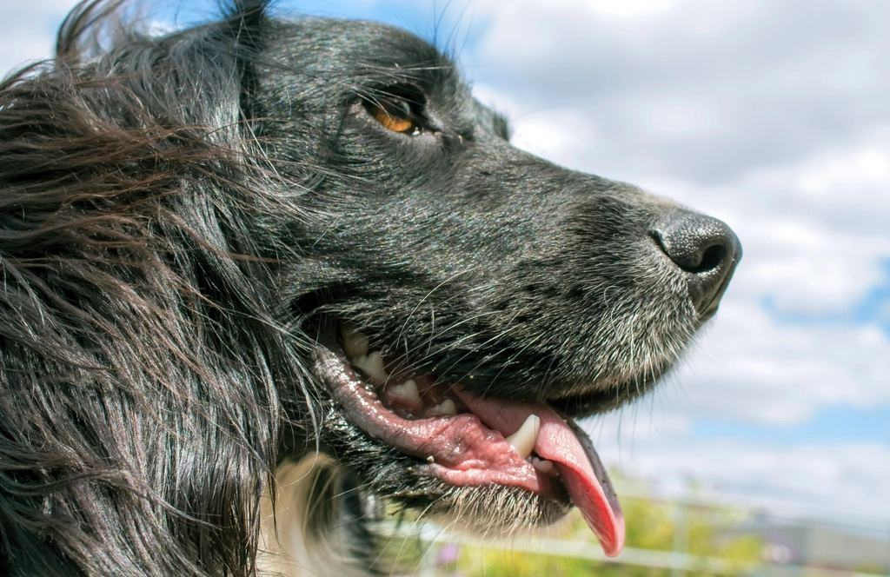

Före & efter
Några av våra fyrbenta kunder – före och efter besöket.
- 2026

Sally
Klippt mellan förmiddagspromenaden och lunchvilan – hämtad nyklippt kvart över fem.
- 2026

Rufus
Tre kilo underull ut efter en vecka med lera i rastgården.
- 2025

Milo
Fem månader, tre dagars inskolning och nu en självklar plats i valpgruppen.
- 2025

Vera
Dusch och handduk efter en skogspromenad i oktoberregn.
- 2026

Leia
Kort valpklippning var sjätte vecka, alltid på hennes ordinarie dagisdag.
- 2025

Bruno
Öron och tassar putsade så att han slutar bära hem halva skogen.
En dag i rastgården







Illustrationsbilder
Dagisföräldrar berättar
Camilla J. · Skåre”Jag lämnar Sally klockan sju och hämtar henne nyklippt. Jag har inte tagit ledigt för en frisörtid på tre år.”
Fredrik N. · Karlstad”Inskolningen var lugn och genomtänkt. Milo springer från bilen till grinden varje morgon.”
Johanna Ö. · Hammarö”Rufus kommer hem trött, ren och glad. Bilden på eftermiddagen är det bästa med min arbetsdag.”